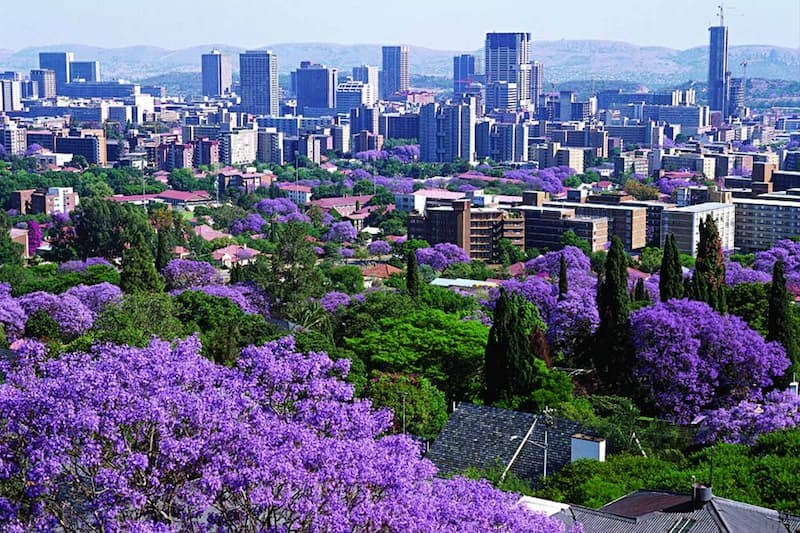
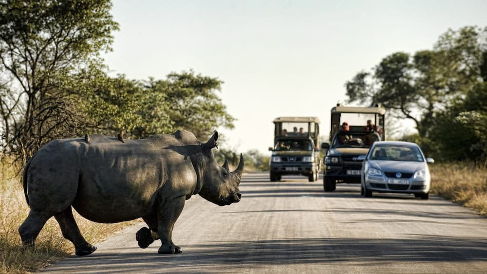
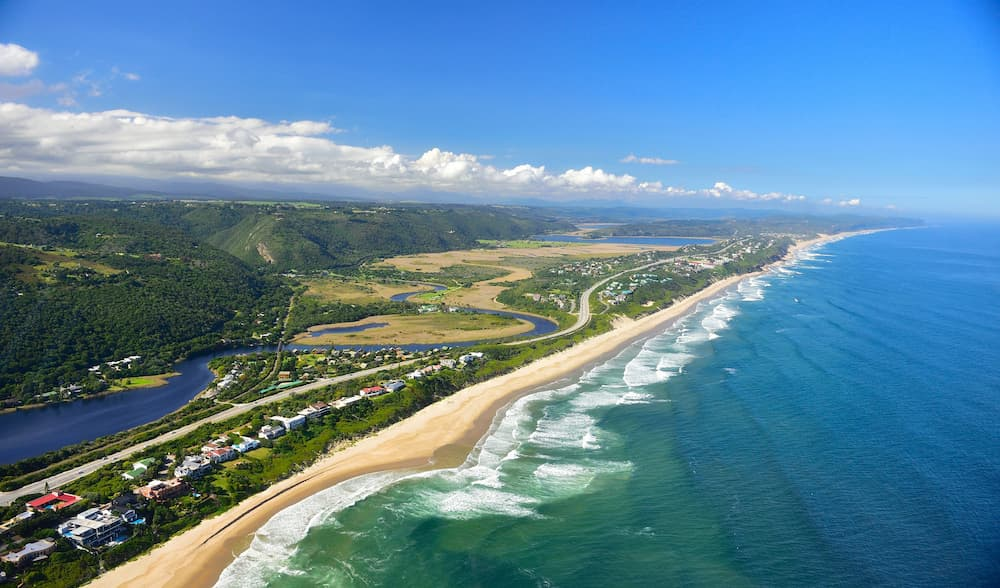

Cape Town
Cape Town is famous for Table Mountain, beautiful beaches, the V&A Waterfront and the Stellenbosch wine farms.
South Africa offers incredible cities, breathtaking landscapes, wildlife reserves, and coastal adventures. Explore some of the country's most popular destinations.
Cape Town is famous for Table Mountain, beautiful beaches, the V&A Waterfront and the Stellenbosch wine farms.
Johannesburg is South Africa's largest city, known for its history, culture, and vibrant economy.
.jpg)
Durban is a coastal city famous for its beaches, warm climate, and rich multicultural heritage.

Pretoria is known for its jacaranda-lined streets, government buildings, and historical landmarks.

One of Africa's most famous safari destinations, home to the Big Five and diverse wildlife.

A spectacular coastal route featuring forests, lagoons, beaches, and charming towns.
South Africa is known for its diverse cultures, incredible landscapes, world-class wildlife experiences, and welcoming people. Whether you enjoy nature, adventure, history, or relaxation, there is something for every traveler.